ECON 2316 • Microeconomic Theory • Chapter 13 • Part 2
Oligopoly
Part 1 found the long-run tangency when many firms ignore each other. Now drop that assumption: a few firms whose payoffs are linked. Spotify, Apple, Amazon, and YouTube Music all sit within a dollar of each other — not at the competitive floor, not the monopoly ceiling, but the third place where your best move depends on theirs.
Dr. Richeng Piao
Department of Economics
Northeastern University — 100 min
Learning Objectives
By the end of class today, you will be able to…
1
Define oligopoly, set the cartel upper bound, and explain why collusion breaks down. (Bloom L2)
2
Solve the Cournot model: best responses, the symmetric \(N\)-firm equilibrium, and the limit as \(N \to \infty\). (Bloom L4 — central result)
3
Derive the Bertrand paradox and explain the three assumptions it needs to hold. (Bloom L3)
4
Recover finite markups via differentiated-product Bertrand and calibrate to the streaming cluster. (Bloom L4)
5
Solve Stackelberg by backward induction and rank all five regimes on welfare. (Bloom L5)
From Many Prices to Many Firms
Chs 11–12 — one firm
- A single firm makes every decision internally
- One price (Ch 11) or a price portfolio (Ch 12)
- Markup pinned by own elasticity: \(L = -1/\varepsilon_D\)
- No rival to react to
Ch 13 — a few firms
- Each firm's profit depends on what rivals do
- Four models: Cournot, Bertrand, diff. Bertrand, Stackelberg
- Each predicts a different \(P\), \(Q\), profit, welfare
- The new ingredient is strategic interaction
One assumption relaxes. Chapters 11–12 let one firm monopolize. Now let a few firms compete — and each firm's optimum depends on a conjecture about the others. The market structures between perfect competition and pure monopoly are exactly the interesting cases: real markets — airlines, streaming, oil, pharma — almost never sit at either textbook extreme.
Three Oligopolies, One Question
Oil. OPEC+ — a handful of national producers plus a US-shale fringe. When Saudi cuts output, rivals respond; in April 2026 eight members began unwinding a 1.65 mb/d cut. A first-mover commitment game (§13.6).
Pharma. Wegovy vs Zepbound — two firms at \$1,349 and \$1,086/mo holding four-figure markups because the drugs differ, not because they collude (§13.5).
Streaming. Four paid platforms cluster within a dollar. Perfect competition would drive price to the \$8.40 royalty cost; monopoly would push to \$11.99 at \(L = 0.30\). They do neither.
\$11.99
Spotify (290M subs)
\$10.99
Apple Music
\$11.99
Amazon (\$10.99 Prime)
\$10.99
YouTube Music (Q4 2025)
All three are oligopolies — a handful of firms whose pricing turns on what rivals do. Oil previews sequential moves (Stackelberg, §13.6); the GLP-1 duopoly previews differentiated price competition (§13.5); streaming is the running anchor. None sits at the competitive floor or the monopoly ceiling — Part 2 is the toolkit for that “third place.”
Why Do Oligopolies Exist?
The same barriers to entry from Ch 11 (Monopoly) — but here they leave a handful of survivors, not one.
Economies of scale
Airlines, autos, chips: minimum efficient scale is billions in fixed cost. A new airline must match Delta’s entire route network first.
Network & switching costs
Only three big cloud providers — AWS, Azure, Google Cloud — because firms embed their systems and can’t easily switch.
Patents & brand
Proprietary technology and brand loyalty wall off the market. Apple moves; Samsung must react — not a no-name startup.
High barriers → few firms → each is large enough to matter → strategic interdependence. The structure is built by the same forces that build monopoly — they just stop one step short.
↓ One live case per barrier — TJ Maxx (scale), streaming (switching costs), Gillette razors (patents & brand)
Barrier 1 · Economies of Scale
Hidden in Plain Sight: TJ Maxx, Marshalls & HomeGoods
The treasure-hunt giant
TJ Maxx, Marshalls, and HomeGoods are all one company — TJX, headquartered in Framingham, MA. It rings up ~\$54B a year — more than Macy’s and Nordstrom combined — while looking like the discount underdog. The scarcity is engineered: tiny quantities, no two stores alike, stock rotates weekly — so “buy it now or it’s gone” is the strategy, not an accident.
It checks every oligopoly box:
☑ A few large firms (TJX, Ross, Burlington)
☑ Interdependence (chasing the same closeouts)
☑ Economies of scale (huge buying power)
☑ Long-run profit (the treasure-hunt moat)
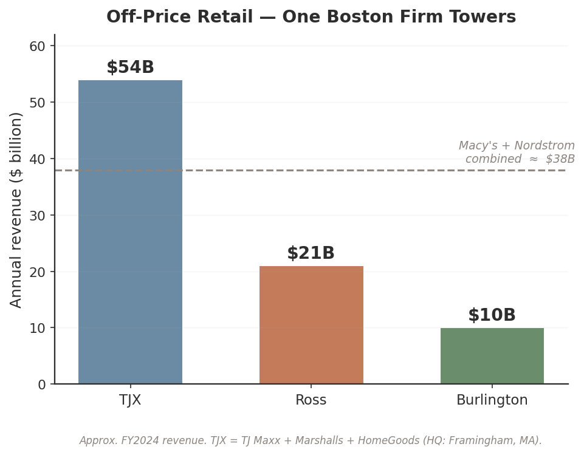
Barrier 2 · Network & Switching Costs
The Streaming Wars: Locked In by Your Library
Switching costs lock you in
Your watch history, profiles, downloads, and the shows you can only get here make leaving painful — you start over somewhere else. So platforms spend to keep you: Netflix ~\$17B/yr on content, Disney ~\$25B — an arms race with no finish line. If one stops it loses subscribers; if all keep spending, it’s a prisoner’s dilemma.
It checks every oligopoly box:
☑ A few large firms (Netflix, Disney+, Max, Amazon)
☑ Interdependence (matched price hikes & content)
☑ Network & switching costs (your library + history)
☑ The arms race = a prisoner’s dilemma
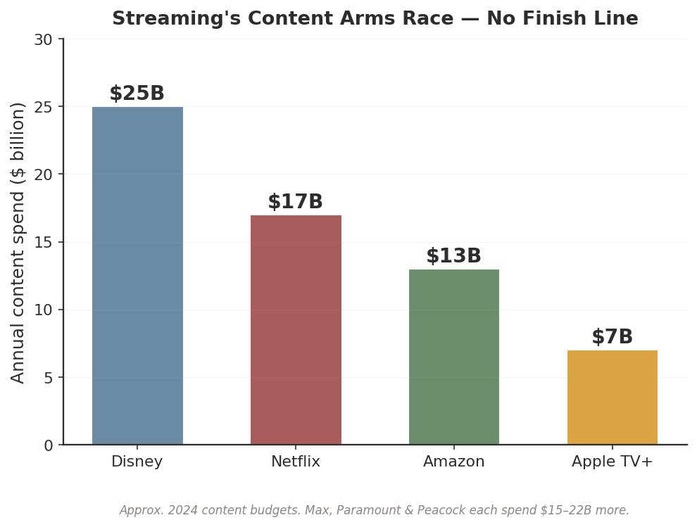
Barrier 3 · Patents & Brand
A Textbook Oligopoly: The Razor Aisle
Heavy R&D & a blade arms race
Gillette spent ~\$750 million developing the 3-blade Mach3 — then kept adding blades. In 2004 The Onion mocked the race with a fake “We’re Doing Five Blades” op-ed; two years later Gillette shipped the 5-blade Fusion. Cartridges are patented — only Gillette blades fit Gillette handles.
It checks every oligopoly box:
☑ A few large firms (Gillette + Schick ≈ two-thirds)
☑ Interdependence (the blade arms race)
☑ Patents & brand (patented cartridges)
☑ Long-run profit (razor-and-blades lock-in)
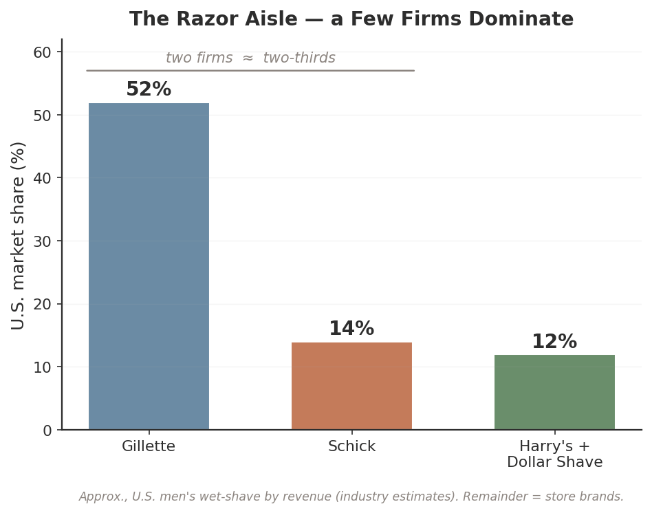
Other Examples of Oligopoly
Petroleum
Airlines
Telecommunications
From oil (Exxon, Chevron, Shell…) to airlines (Delta, United, American, Southwest) to your phone carrier (Verizon, AT&T, T-Mobile), a few giants dominate — because enormous fixed costs (refineries, fleets, networks) create steep barriers to entry.
Oligopoly: Your Best Move Depends on Theirs
An oligopoly is a market with a small number of firms whose payoffs depend on each other's choices. Each firm optimizes conditional on a conjecture about what rivals will do — and the three classic models differ only in what each firm holds fixed.
Cournot
Firms pick quantities simultaneously; each takes rivals' \(q\) as fixed. (§13.3)
Bertrand
Firms pick prices simultaneously; each takes rivals' \(P\) as fixed. (§13.4–13.5)
Stackelberg
One firm moves first and commits; the follower observes and responds. (§13.6)
Each conjecture yields a different equilibrium markup. Empirical IO matches each industry to the model that fits its strategic structure — quantity competition for capacity-constrained commodities, price competition for differentiated goods, sequential moves where one player can commit visibly first.
Recap: Part 1 — Monopolistic Competition
Part 1 in one slide
Many differentiated firms, free entry, independent decisions. Differentiation gives each a downward-sloping perceived demand; the firm runs \(MR_i = MC\), so \(P > MC\).
Free entry then pulls each firm to the Chamberlin tangency: \(P = ATC\) (zero profit) on the falling branch of ATC — a persistent markup and excess capacity.
What changes in Part 2
Drop the “independent decisions” assumption. With only a few firms, each firm's profit depends on what rivals do — strategic interaction.
The cartel ceiling (\(L = 0.667\)) and the perfect-competition floor (\(L = 0\)) bracket every model below. Which point we land on depends on the conjecture: quantities, prices, or who moves first.
The plan. §13.3 Cournot → §13.4 Bertrand + the paradox → §13.5 differentiated Bertrand → §13.6 Stackelberg → §13.7 capacity and the welfare ranking across all five regimes.
Review: The Boston Boba Market
Kung Fu Tea, a major international chain, locks up the Greater-Boston bubble-tea market with prime storefronts. For now it is the only seller — a monopoly.
Inverse market demand: \(P = 19.99 - 0.03\,Q\)
Marginal cost: \(MC = \$1\) per cup (same for every firm)
Choke price \(\$19.99\). Above it, quantity demanded is zero.
Slope \(0.03\). Sensitive to quantity, but not extremely so.
Recall — a monopolist sets \(MR = MC\), then reads the price up on the demand curve (Ch 11). We solve Kung Fu Tea's monopoly next — then a rival shows up.
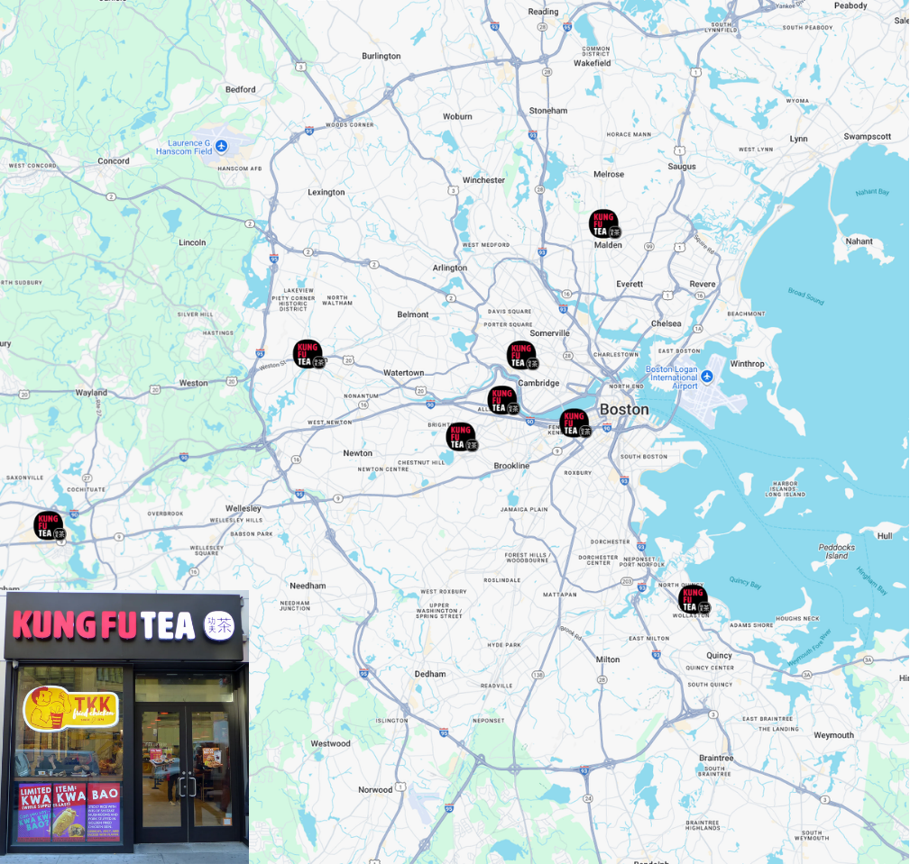
Kung Fu Tea's Greater-Boston footprint — the only boba chain in the market… for now.
Monopoly Benchmark: Kung Fu Tea Alone
A monopolist produces where marginal revenue = marginal cost. With linear demand, \(MR\) is twice as steep as demand:
\(TR = (19.99 - 0.03Q)\,Q \;\Rightarrow\; MR = 19.99 - 0.06Q\)
Set \(MR = MC\): \(19.99 - 0.06Q = 1 \;\Rightarrow\; Q^{\ast} \approx 316.5\) cups
Price (read up on demand): \(P^{\ast} = 19.99 - 0.03(316.5) = \$10.495\)
Profit: \(\pi = (P^{\ast} - MC)\,Q^{\ast} \approx (10.495 - 1)(316.5) \approx \$3{,}005\)
That \(\approx\$3{,}005\) is the ceiling — the most this market can yield, earned when one decision-maker controls all output. Part 2's question: how much of it survives once rivals compete?
A monopoly has no supply curve: it sets \(Q^{\ast}\) where \(MR=MC\), then reads price up on demand. Green = profit.
Then a Competitor Enters…
A local rival — say Husky Boba — opens across the street. Two firms, same \(MC = \$1\): they will compete, not share.
Seeing \(\$3{,}005\) on the table, the entrant wants a piece. The two firms now share one demand curve.
The tempting move: collude — split the monopoly output, hold the price at \(\$10.50\), and share the \(\$3{,}005\) (a cartel).
But a cartel is fragile — each firm would rather quietly undercut. Three questions drive the rest of the chapter:
1. Why can't they just keep colluding? (§13.3)
2. If A cheats by 100 cups — then B cheats too — where does it settle? (§13.3 Cournot)
3. What if they compete on price instead of quantity? (§13.4 Bertrand)
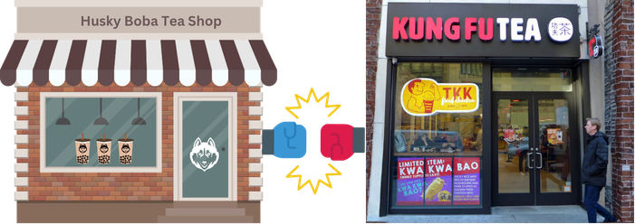
The Upper Bound: Why Don't They Just Collude?
If a few firms could perfectly coordinate, they would jointly play monopoly — pick total \(Q\) to maximize \(\pi^{M}\) and split it. With \(N\) identical firms, each makes \(q^{M}/N\) and earns \(\pi^{M}/N\). This cartel outcome is the highest profit any oligopoly can sustain. So why doesn't it always happen?
1. Antitrust. Sherman Act §1 forbids explicit price-fixing; executives face prison.
2. Coordination cost. With \(N \geq 3\), agreeing on each firm's quota takes repeated negotiation.
3. Cheating incentive. Even with an agreement, each firm gains by quietly undercutting — the deep one.
Recall from Principles — 1116 §13.4
A cartel is an agreement to coordinate output or price and split the profits. The 1116 treatment used OPEC and the prisoner's-dilemma payoff matrix: each member gains from the deal, but each also gains from cheating on it.
Ch 13 formalizes the cheating incentive as the Bertrand-undercutting logic (§13.4). Ch 14's repeated games decide whether cartels survive.
Reason 3 is the deep one: even with no antitrust exposure and zero coordination cost, each firm has a unilateral incentive to defect. For Ch 13 the cartel is an upper benchmark only — the ceiling every model below falls short of.
The Modern Variant: Algorithmic Pricing
The DOJ and seven state AGs sued RealPage (Aug 2024): its YieldStar software allegedly acted as a hub-and-spoke device, pooling non-public future-pricing data from competing landlords and recommending prices that softened competition — without explicit communication.
Nov 2025 proposed consent decree: stop training on non-public competitor data. Underlying class-action settlement \$141.8M (preliminarily approved Oct 2025).
Calvano, Calzolari, Denicolò & Pastorello (2020, AER): simulated Q-learning algorithms can independently learn supracompetitive collusive strategies — with punishment phases — and no communication at all.
Heads Up 13.1 — algorithmic pricing isn't automatically collusion
“The algorithm produced high prices” does not equal “the algorithm broke antitrust law.” Pricing software has a legitimate use: estimating your own demand.
The violation requires an agreement to share non-public information among competitors, or parallel conduct plus facts suggesting coordination. Watch the data flow, not the price level. §13.5 shows supracompetitive prices are fully consistent with non-collusive differentiated-Bertrand equilibrium.
§13.3
Cournot Competition
A few firms choose quantities simultaneously — each best-responding to the others
Cournot: Compete by Choosing Quantity
A local boba shop might compete on price. But producers in larger or commodity markets often have to set production first — capacity constraints mean a price cut can't instantly steal all of a rival's customers.
Cournot competition — an oligopoly model in which each firm chooses its production quantity rather than its price. The market price then falls out of the total quantity all firms produce.
Assumptions — Cournot with identical goods
- Only a small number of firms.
- Firms make identical products.
- Firms compete by choosing a quantity.
- All output sells at the market price, set by the sum of quantities from all firms.
- Firms choose quantities simultaneously.
Choosing Quantity Starts with Plant Size
Competing on quantity begins with one big bet: how large a plant to build. Coca-Cola (Needham) and Pepsi each sized a Boston-area bottling plant — a long-run capacity choice that locks in how much each can pump into the market. That capacity is the Cournot quantity decision.
Setting Up the Cournot Model
Antoine Augustin Cournot
1801–1877
Assume two firms in a Cournot oligopoly:
Each firm has a constant marginal cost \(c\).
Firms 1 and 2 simultaneously choose quantities \(q_1\) and \(q_2\).
Their joint output \(Q = q_1 + q_2\) sets the one market price all firms face.
Linear demand: \(\;P = a - bQ\;\) (intercept \(a\), slope \(-b\)). For our boba market: \(a = 19.99,\; b = 0.03,\; c = \$1\).
Each Firm's Profit Depends on the Other
Inverse demand on joint output: \(\;P = a - bQ = a - b(q_1 + q_2)\).
Firm 1
\(\pi_1 = q_1\,(P - c) = \underbrace{q_1 P}_{TR} - \underbrace{q_1 c}_{TC}\)
Substitute \(P\): \(\pi_1 = q_1\big(a - b(q_1 + q_2) - c\big)\)
Firm 2
\(\pi_2 = q_2\,(P - c)\)
Substitute \(P\): \(\pi_2 = q_2\big(a - b(q_1 + q_2) - c\big)\)
The whole game in one line: each \(\pi_i\) contains the other firm's quantity. Firm 1's best output depends on \(q_2\); firm 2's depends on \(q_1\) — strategic interdependence.
Residual Demand: Firm 1's Slice
Firm 1 can't control \(q_2\). So it treats firm 2's output as fixed and asks: what demand is left for me? Re-group the demand around \(q_1\):
\[ P = a - b(q_1 + q_2) = \underbrace{(a - b\,q_2)}_{\text{intercept}} \;-\; \underbrace{b}_{\text{slope}}\;q_1 \]
Intercept \(a - b\,q_2\): shifts down the more firm 2 produces.
Slope \(-b\): the same steepness as market demand.
Firm 1 now faces an ordinary downward-sloping residual demand — so it behaves like a monopolist on its own slice: set \(MR = MC\) to find its best response. (that derivation is next →)
Worked Example: Coke vs Pepsi in Boston
Boston's soft-drink market — roughly 650,000 people in ~280,000 households — is served by just two sellers: Coca-Cola and Pepsi. They compete on quantity — how many cases to ship each week.
Both have a constant \(MC = AC = \$6\) per case (a case = 24 cans).
Market inverse demand: \(\;P = 18 - 0.2\,Q\), \(Q = q_C + q_P\) (\(Q\) in 000s of cases/wk; C = Coke, P = Pepsi)
\(P = 18 - 0.2\,q_C - 0.2\,q_P\)
Over the next slides: each firm's residual demand → its best response → the Nash equilibrium. We trace Coke's reaction in red and Pepsi's in blue.
Step 1 — Coke's Residual Demand
Coke can't control Pepsi. It takes Pepsi's output \(q_P\) as given and asks: what demand is left for me? Group the market demand around \(q_C\):
\[ P = \underbrace{(18 - 0.2\,q_P)}_{\text{intercept}} - 0.2\,q_C \]
Example. Suppose Pepsi ships \(q_P = 10\) (thousand cases). Then Coke faces:
\(P = 18 - 0.2(10) - 0.2\,q_C = 16 - 0.2\,q_C\)
Same slope \((-0.2)\); the intercept drops from \(18\) to \(16\) as Pepsi fills part of the market. On this leftover line Coke is just a monopolist on its own residual demand — so set \(MR = MC\).
Step 2 — Coke's Reaction Curve
On its residual demand, Coke's \(MR\) doubles the \(q_C\) slope: \(MR_{\text{Coke}} = (18 - 0.2\,q_P) - 0.4\,q_C\). Set \(MR = MC = 6\):
\(18 - 0.2\,q_P - 0.4\,q_C = 6\)
\(q_C = 30 - 0.5\,q_P\) Coke's reaction curve
Graph Coke's best output as a reaction to Pepsi's output:
if Pepsi produces 40 → Coke's best response is 10
if Pepsi produces 20 → Coke's best response is 20
Pepsi's Reaction Curve
By symmetry, set \(MR_{\text{Pepsi}} = MC\) and solve for \(q_P\):
\(q_P = 30 - 0.5\,q_C\) Pepsi's reaction curve
Graph Pepsi's best output as a reaction to Coke's output:
if Coke produces 40 → Pepsi's best response is 10
if Coke produces 20 → Pepsi's best response is 20
Step 3 — The Cournot–Nash Equilibrium
Solve both best responses at once — substitute Pepsi's into Coke's: \(q_C = 30 - 0.5(30 - 0.5\,q_C) \Rightarrow q_C = q_P = \mathbf{20}\).
\(Q = 40\), \(P = \$10\)/case, profit each \(= (P-MC)\,q = \mathbf{\$80}\)k/wk.
Drag a slider to deviate from the Nash. Red/blue arrows show where each firm would move its output to raise its own profit — they vanish only at the Nash \((20,20)\).
Cournot: Each Firm's MR at Its Share of the Market
The puzzle. Streaming firms face implied \(|\varepsilon^{M}| = 3.33\). Symmetric four-firm Cournot would predict \(L \approx 1/(4 \cdot 3.33) = 0.075\). The actual streaming Lerner is \(0.300\). What's wrong? — homogeneous Cournot is the wrong model for streaming. Hold that thought through §13.5.
Setup. \(N\) firms simultaneously choose \(q_i\); total \(Q = \sum q_i\); inverse demand \(P(Q)\). Firm \(i\) maximizes \(\pi_i = P(Q)q_i - C_i(q_i)\), taking rivals' outputs as fixed.
Differentiating (\(\partial Q/\partial q_i = 1\)):
\(\dfrac{\partial \pi_i}{\partial q_i} = P(Q) + q_i\,P'(Q) - C_i'(q_i) = 0\)
Rearranged: \(\underbrace{P(Q) + q_i P'(Q)}_{\text{firm } i\text{'s perceived } MR} = MC_i\). This is the Ch 11 monopolist's \(MR = MC\) — but applied at firm \(i\)'s share-weighted marginal revenue. A Cournot firm is a monopolist over its slice of the residual demand.
Calculus Corner 13.1 — Cournot Best Responses
Linear demand \(P = a - bQ\), constant \(MC_i = c\). The FOC \(a - b\big(\sum_j q_j\big) - bq_i = c\) gives firm \(i\)'s best response to rivals' total \(Q_{-i}\):
\(\mathrm{BR}_i(Q_{-i}) = \dfrac{a - c - b\,Q_{-i}}{2b}\)
Symmetric equilibrium (\(q_i = q^{\ast}\), \(Q_{-i} = (N-1)q^{\ast}\)):
\(q^{\ast} = \dfrac{a-c}{(N+1)b}, \quad P^{\ast} = \dfrac{a + Nc}{N+1}\)
SOC: \(2P' + q_i P'' < 0\); for linear demand \(= -2b < 0\) ✓. Firm output falls in \(N\), total output rises in \(N\), price falls in \(N\).
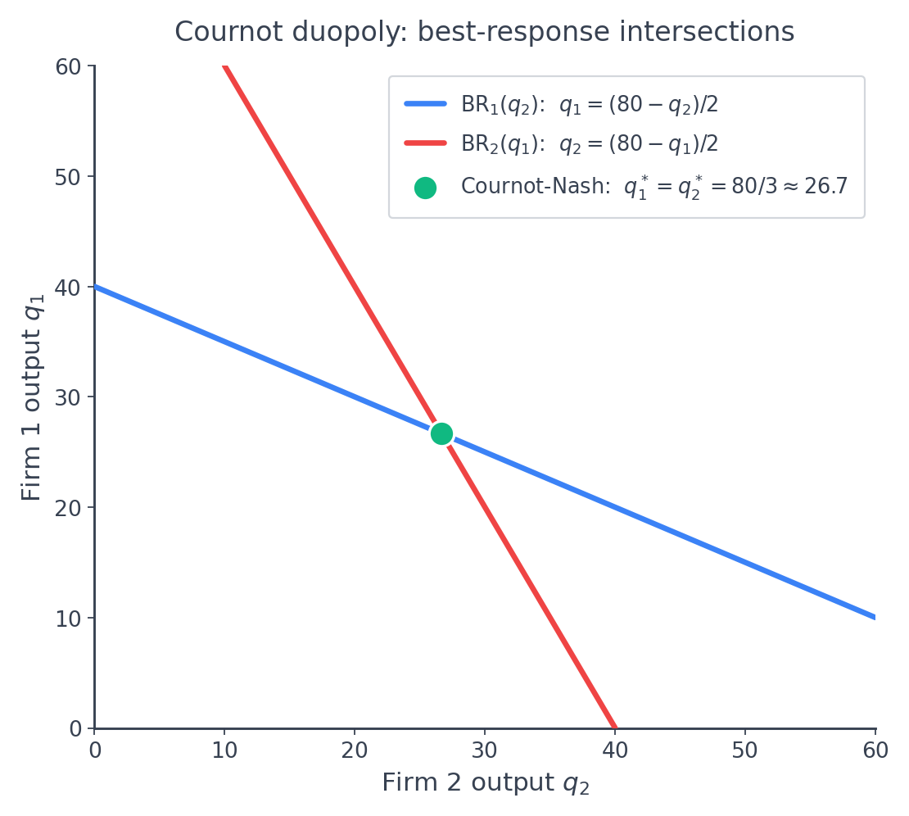
Best responses cross at the Cournot-Nash equilibrium — the fixed point where neither firm wants to deviate.
Toggle the Model: One Demand Curve, Five Equilibria
Demand \(P = 100 - Q\); \(MC = 20\). Every regime is a point on the demand curve: green = CS, blue = profit, red = DWL. Cournot \(N=1\) is the cartel; \(N\to\infty\) reaches Bertrand = PC. Stackelberg sits below Cournot duopoly on price.
Walkthrough 13.2 — Cournot Duopoly: The Boston Boba Market
Back to boba. Kung Fu Tea \((K)\) and the entrant Husky Boba \((H)\) now compete on quantity. Same market: \(P = 19.99 - 0.03\,Q\), \(Q = q_K + q_H\), each \(MC = \$1\). Where does the entry slide's “cheat, then counter-cheat” settle? Find the Cournot-Nash quantity, price, and per-firm profit.
Set up & solve
Kung Fu Tea's \(MR_K = 19.99 - 0.03\,q_H - 0.06\,q_K = 1 \Rightarrow q_K = 316.5 - 0.5\,q_H\) (best response — intercept \(316.5\) is its monopoly output).
Symmetric: \(q^{\ast} = 316.5 - 0.5\,q^{\ast} \Rightarrow q^{\ast} = \mathbf{211}\) cups each.
\(Q = 422\), \(P = \$7.33\), \(\pi_i = (7.33 - 1)(211) \approx \mathbf{\$1{,}336}\), \(L \approx 0.86\).
Check — against the two benchmarks
Cartel (split the monopoly): \(Q^M = 316.5\), \(P^M = \$10.50\), joint \(\pi^M \approx \$3{,}005\) (each \(\approx \$1{,}503\)).
Bertrand (§13.4): \(P = MC = \$1\), \(\pi = 0\) — the floor.
Cournot sits between — industry \(\approx \$2{,}671\), which is \(8/9\) of the cartel; price drops only one-third of the way toward the \(\$1\) floor.
Takeaway. Linear demand, constant \(MC\): Cournot duopoly lands \((q^{\ast}, P^{\ast}) = \big(\tfrac{a-c}{3b}, \tfrac{a+2c}{3}\big)\) — here \(211\) cups at \(\$7.33\). Each firm nets \(\approx\$1{,}336\) versus the \(\approx\$1{,}503\) a cartel split would pay; that missing \(1/9\) (\(\approx\$167\) per firm) is the price of being unable to commit. This is exactly where the entry slide's cheat-and-counter-cheat comes to rest.
Walkthrough 13.3 — \(N\)-Firm Cournot and the PC Limit
Problem. \(N\) symmetric firms, \(P = 100 - Q\), \(MC = 20\). Solve for \(q^{\ast}, Q^{\ast}, P^{\ast}, L^{\ast}\) as functions of \(N\); verify the \(N \to \infty\) limit. Calibrate \(N = 4\) to the streaming constellation.
From CC 13.1: \(q^{\ast} = \dfrac{80}{N+1}\), \(P^{\ast} = \dfrac{100+20N}{N+1}\), \(L^{\ast} = \dfrac{4}{5+N}\).
| \(N\) | \(Q^{\ast}\) | \(P^{\ast}\) | \(\pi^{\ast}_i\) | \(L^{\ast}\) |
|---|---|---|---|---|
| 1 (mono) | 40 | \$60 | \$1,600 | 0.667 |
| 2 | 53.3 | \$46.67 | \$711 | 0.571 |
| 4 (streaming) | 64 | \$36 | \$256 | 0.444 |
| \(\infty\) | 80 | \$20 | \$0 | 0 |
Cournot-to-PC convergence. As \(N \to \infty\): each firm's share \(\to 0\), total \(Q \to 80 = Q^{PC}\), \(P \to MC\), \(L \to 0\). Monotonic.
The streaming wedge. Linear-demand \(N=4\) gives \(L = 0.444\); constant-elasticity \(N=4\) gives \(L = 1/(4 \cdot 3.33) = 0.075\). The actual streaming \(L = 0.300\) sits between — neither homogeneous model fits. §13.5 differentiation will.
Cournot ≠ Cartel — and How IO Measures Real Markups
Heads Up 13.2 — symmetric Cournot is not an even-split cartel
At \(N = 2\): the cartel makes total \(Q = 40\) at \(P = \$60\), each firm earning \(\$800\). Cournot makes \(Q = 53.33\) at \(P = \$46.67\), each earning \(\$711\).
Each cartel member individually gains by producing above quota at the cartel price. The Cournot-Nash is the fixed point where no firm wants to deviate. The wedge is the cost of being unable to commit — Ch 14 shows when future-punishment threats close it.
Theory and Data 13.2 — the BLP workhorse
Berry-Levinsohn-Pakes (1995, Econometrica) is the standard method: random-coefficients logit demand, prices instrumented by rival characteristics, cross-price elasticities recovered by contraction mapping. Apply the Bertrand FOC firm-by-firm and out come markups, marginal costs, and merger counterfactuals.
Miller-Sheu-Weinberg 2021 (US beer); Backus-Conlon-Sinkinson 2021 (cereal). Implied Lerner indices cluster 0.2–0.5 across consumer goods — well above homogeneous-Cournot at the same concentration. Differentiation, not concentration, is the dominant source of market power.
§13.4
Bertrand Competition & the Paradox
If firms set prices instead of quantities, how few firms does it take to reach \(P = MC\)?
Bertrand Competition
- Bertrand competition: two (or more) firms compete on price to sell the same good.
- Firms set their prices simultaneously.
- Consumers are indifferent between the brands and always buy from the seller with the lowest price.
That last assumption is the engine: undercut your rival by a single penny and you capture the entire market — so each firm always has a reason to cut price.
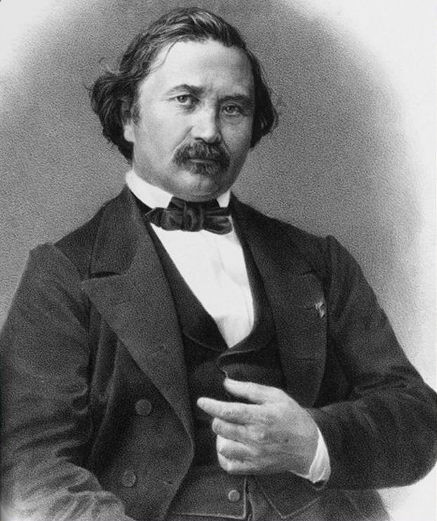
JOSEPH BERTRAND
1822–1890
Equal Prices Split the Market: \(P_W = P_T\)
$200
Setting up the model
Walmart & Target sell the identical Switch, same cost \(MC = \$200\). Total demand \(Q\); prices \(P_W\), \(P_T\).
\(Q = \color{#1d4ed8}{q_W} + \color{#dc2626}{q_T} = \tfrac{Q}{2} + \tfrac{Q}{2}\)
Equal prices → indifferent shoppers split the market 50/50.
$200
Walmart Undercuts: \(MC \lt P_W \lt P_T\)
$200
Walmart shaves its price to $450 — still above the \(\$200\) cost, just below Target.
\(Q = \color{#1d4ed8}{q_W} + \color{#dc2626}{q_T} = Q + 0\)
The lowest price wins everyone → Walmart takes the whole market.
$200
Target Strikes Back: \(MC \lt P_T \lt P_W\)
$200
So Target counters at $498 — a penny under Walmart — and steals the whole market right back.
\(Q = \color{#1d4ed8}{q_W} + \color{#dc2626}{q_T} = 0 + Q\)
The leapfrogging has no floor until \(P = MC = \$200\). → the Bertrand paradox (next).
$200
Demand for Switches at Walmart
Walmart's sales depend entirely on how its price \(P_W\) compares to Target's \(P_T\):
Walmart's demand (bold) hugs the axis when it's pricier, then jumps to the entire market the instant it undercuts \(P_T\).
Demand for Switches at Target
By symmetry, Target faces the mirror image — its sales depend on \(P_T\) versus \(P_W\):
The only way to sell Switches is to match or beat your competitor — so both firms feel the pull to cut.
Same kink, roles reversed: Target wins the market by undercutting \(P_W\).
Nash Equilibrium with Reaction Curves
Each firm's best response is to just undercut the rival — until it hits \(MC\). Plot both reaction curves on one graph:
- Nash equilibrium: \((\color{#2563eb}{p_w} = MC,\ \color{#b91c1c}{p_t} = MC) = (\$200,\ \$200)\) — where the two reaction curves intersect.
- There, neither firm has an incentive to undercut or change price.
The same demand gives Lerner \(L = 0.667\) (monopoly) and \(0.444\) (Cournot \(N{=}4\)), but \(L = 0\) here — two firms reach the perfectly competitive limit.
Walmart's and Target's reaction curves cross only at \((MC, MC)\).
Too Good to Be True? \(P = MC\) with Two Firms
A fully competitive outcome from just two firms? That should feel suspicious.
So what's wrong?
The model assumes the goods are perfect substitutes. But Walmart and Target aren't next to each other — they sit 9 miles apart.
Location is a form of product differentiation. → §13.5
Target ↔ Walmart: 9.2 mi, ~13 min apart — not the same “store.”
Are the Goods Really Identical?
Gasoline is about as homogeneous as a product gets — yet two stations a mile apart post different prices and both stay in business:
Mobil
$3.20
Speedway
$2.90
Drivers don't all rush to the cheaper pump — location and convenience differentiate even “identical” gas. Relax homogeneity and price rises above \(MC\): that's differentiated Bertrand. → §13.5
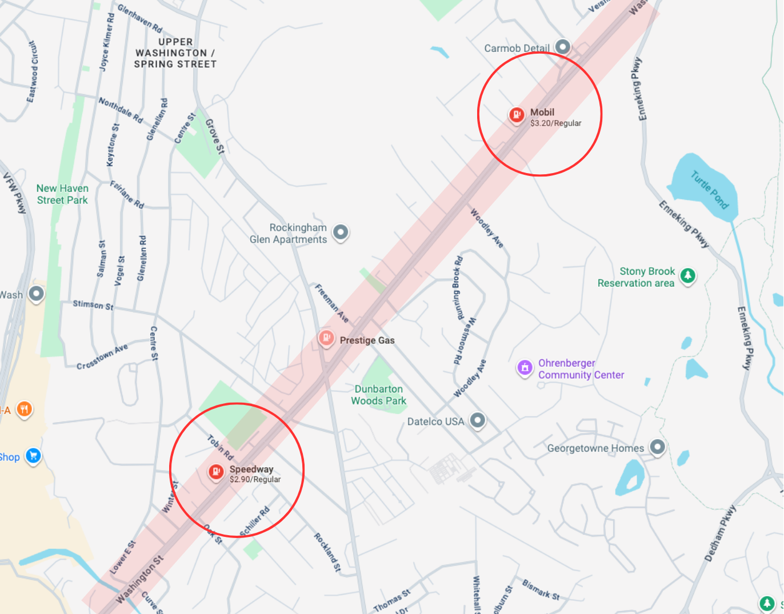
Walkthrough 13.4 — Bertrand by Elimination: The Boba Price War
Back to boba — now on price. Kung Fu Tea \((K)\) and Husky Boba \((H)\) sell the identical drink, same market \(P = 19.99 - 0.03\,Q\), \(MC = \$1\). They post prices simultaneously; the lower price takes the whole market (ties split). Find the Bertrand-Nash.
Eliminate the candidates
(i) \(P_K > P_H > MC\): Kung Fu Tea sells nothing; cutting to \(P_H - \epsilon\) earns positive profit. ✗
(ii) \(P_K = P_H > MC\): each gets half; shading a penny lower grabs the whole market. ✗
(iii) \(P_K = P_H = MC = \$1\): raise → rival takes all (still zero); lower → loss. No profitable deviation. ✓
Solve & check
\((P_K^{\ast}, P_H^{\ast}) = (\$1, \$1)\). At \(P=\$1\): \(Q = \tfrac{19.99-1}{0.03} \approx 633\) cups, split \(q_i \approx 316\), \(\pi_i = \$0\), \(L = 0\).
Two boba shops reach the perfect-competition outcome — price at marginal cost, zero economic profit.
The boba ladder. Same market, same two shops — only the strategic variable changes: monopoly \(\$3{,}005\) → Cournot \(\$1{,}336\) each → Bertrand \(\$0\). Switching from quantity to price competition wipes out the entire monopoly rent with just two firms.
Heads Up 13.3 — The Paradox Needs All Three Assumptions
The empirical fact that few-firm markets show large markups doesn't refute Bertrand — it refutes its three assumptions in pure form. Each fails somewhere:
Homogeneous products? — Spotify, Apple, Amazon, YouTube Music aren't perfect substitutes (algorithms, exclusives, bundles, integrations). Finite substitutability \(\gamma\) gives \(P > MC\). → §13.5
Unlimited capacity? — When capacity binds, undercutting stops paying: the rival's capacity caps your residual demand (Kreps-Scheinkman 1983). The two-stage game gives the Cournot outcome. → §13.7
One shot? — In an infinitely repeated game with a patient enough discount factor, grim-trigger strategies sustain \(P > MC\) (Friedman 1971; Stigler 1964). → Ch 14
The Bertrand paradox is best read as a diagnostic: it tells you which feature of a real market generates its markup. Each of the next three units relaxes exactly one assumption and recovers a finite markup.
§13.5
Differentiated-Product Bertrand
Relax “homogeneous” — and the four-firm streaming cluster falls right out
Differentiated Boba: Kung Fu Tea Advertises
In the homogeneous price war (W13.4), Kung Fu Tea and Husky Boba were trapped at \(P = MC = \$1\), earning \(\$0\). Now Kung Fu Tea runs a viral campaign — customers see the two shops as different. Demand is now differentiated, depending on both prices:
Kung Fu Tea: \(q_K = 700 - 100\,P_K + 50\,P_H\)
Husky Boba: \(q_H = 450 - 100\,P_H + 50\,P_K\)
A \(\$1\) cut now loses only \(100\) cups to the rival — not the whole market. Each shop keeps \(MC = \$1\).
Our four questions
- Derive each shop's best-response (reaction) curve.
- What happens to each shop's optimal price?
- What happens to each shop's optimal output?
- Draw the reaction curves and find the equilibrium.
Real boba is differentiated — dozens of brands, each with regulars. That brand loyalty is exactly what lets Kung Fu Tea and Husky price above \(MC\).
Solve the Reaction Curves
Kung Fu Tea
\(\pi_K = (P_K - 1)(700 - 100P_K + 50P_H)\)
FOC: \(\dfrac{\partial \pi_K}{\partial P_K} = 800 - 200P_K + 50P_H = 0\)
\(P_K = 4 + 0.25\,P_H\)
Husky Boba
\(\pi_H = (P_H - 1)(450 - 100P_H + 50P_K)\)
FOC: \(\dfrac{\partial \pi_H}{\partial P_H} = 550 - 200P_H + 50P_K = 0\)
\(P_H = 2.75 + 0.25\,P_K\)
Substitute Husky's into Kung Fu Tea's:
\(P_K = 4 + 0.25(2.75 + 0.25P_K) \Rightarrow 0.9375\,P_K = 4.6875\)
\(\Rightarrow \mathbf{P_K = \$5},\ \ q_K = 400,\ \ \pi_K = \mathbf{\$1{,}600}\)
\(P_H = 2.75 + 0.25(5) = \$4\)
\(\Rightarrow \mathbf{P_H = \$4},\ \ q_H = 300,\ \ \pi_H = \mathbf{\$900}\)
Differentiation rescues profit. The reaction curves slope up — prices are strategic complements (the opposite of Cournot quantities). Both prices land above \(MC=\$1\), and the \(\$0\) paradox becomes \(\$1{,}600 + \$900\) of profit. A little difference is all it takes for two firms to escape \(P=MC\).
Explore: Reaction Curves & the Nash
Drag a price. Blue/red arrows show where each shop would move its price to raise profit — both vanish only at the Nash \((P_K, P_H) = (\$5, \$4)\), where the upward-sloping reaction curves cross.
Calculus Corner 13.3 — Differentiated-Bertrand FOC
Linear differentiated demand: \(Q_i = \alpha - \beta P_i + \gamma P_j\), with \(0 \leq \gamma < \beta\). The cross-price coefficient \(\gamma\) is the substitutability dial.
Firm \(i\) maximizes \(\pi_i = (P_i - c)(\alpha - \beta P_i + \gamma P_j)\). FOC:
\(\alpha - \beta P_i + \gamma P_j - \beta(P_i - c) = 0\)
Best response \(P_i = (\alpha + \beta c + \gamma P_j)/(2\beta)\). Set \(P_i = P_j = P^{\ast}\):
\(P^{\ast} = \dfrac{\alpha + \beta c}{2\beta - \gamma}\)
\(\gamma \to \beta\) (near-perfect substitutes): \(P^{\ast} \to c\), the Bertrand floor. \(\gamma \to 0\) (independent): \(P^{\ast} \to (\alpha+\beta c)/2\beta\), each firm's monopoly price.
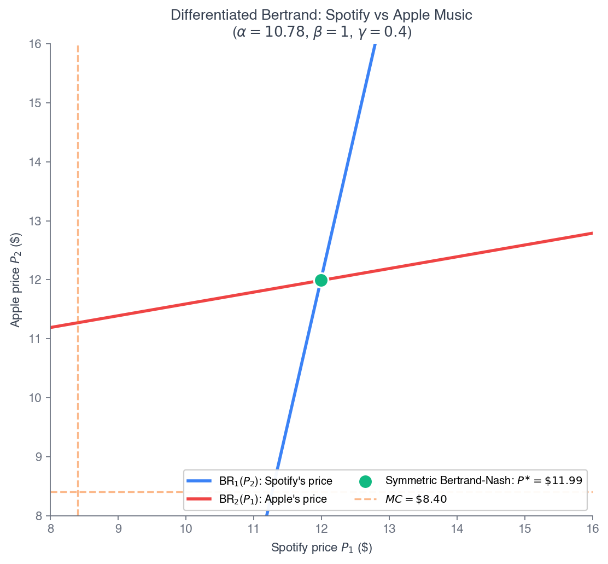
Prices are strategic complements — best responses slope up, equilibrium above \(MC\).
Walkthrough 13.5 — Streaming: Price, Quantity, Elasticity
Given. Two symmetric differentiated streaming services (Spotify, Apple Music): demand \(q_i = \alpha - \beta P_i + \gamma P_j\) with \(\alpha = 10.784\), \(\beta = 1\), \(\gamma = 0.4\), and \(MC = c = \$8.40\). Find the equilibrium price, quantity, and the own- and cross-price elasticities.
Step 1 · Price & quantity (CC 13.3 shortcut)
Symmetric Nash: \(P^{\ast} = \dfrac{\alpha + \beta c}{2\beta - \gamma} = \dfrac{10.784 + 8.40}{2 - 0.4} = \dfrac{19.184}{1.6} = \mathbf{\$11.99}\)
Plug back: \(q^{\ast} = \alpha - (\beta - \gamma)P^{\ast} = 10.784 - 0.6(11.99) = \mathbf{3.59}\)
Step 2 · Elasticities, straight from the demand
\(P_j\) appears only in the \(+\gamma P_j\) term, so the slopes are \(\dfrac{\partial q_i}{\partial P_i} = -\beta\) and \(\dfrac{\partial q_i}{\partial P_j} = +\gamma\). Multiply each by \(\dfrac{P^{\ast}}{q^{\ast}}\):
own: \(\varepsilon_{ii} = -\beta\,\dfrac{P^{\ast}}{q^{\ast}} = -1\cdot\dfrac{11.99}{3.59} = \mathbf{-3.34}\)
cross: \(\varepsilon_{ij} = +\gamma\,\dfrac{P^{\ast}}{q^{\ast}} = +0.4\cdot\dfrac{11.99}{3.59} = \mathbf{+1.336}\) (positive → substitutes)
Takeaway. Lerner \(L = \dfrac{P^{\ast}-MC}{P^{\ast}} = \dfrac{11.99 - 8.40}{11.99} = \mathbf{0.300}\) — the same markup as the Ch 11 monopoly, produced by just two firms. Differentiation (\(\gamma/\beta = 0.4\)) gives each a residual demand nearly as steep as a monopolist's. As \(\gamma \to \beta\), \(P^{\ast} \to MC\) and \(L \to 0\) — back to the homogeneous paradox. This is the answer to the §13.3 streaming-markup puzzle.
Wegovy vs Zepbound — Differentiation Lets Two Firms Hold Markups
\$1,349
Wegovy / mo (semaglutide; CV indication)
\$1,086
Zepbound / mo (tirzepatide; superior weight loss)
Real clinical differentiation sustains markups in a duopoly that would otherwise face Bertrand undercutting. Manufacturer-direct programs (Wegovy \$199–349 NovoCare; Zepbound \$299–449 Lilly Direct) act as third-degree PD. April 2026: Novo announced a \$675 Wegovy list cut effective Jan 2027 under Zepbound pressure. Q1 2026 spread: \$263.
Heads Up 13.4 — the model explains the cluster, not its symmetric prices
Symmetric diff-Bertrand does not predict every firm charges the same price. It predicts all firms price above MC by an amount set by differentiation.
Asymmetric costs or demand give asymmetric prices. The April 2026 streaming spread (Apple \$10.99 to Spotify \$12.99) is consistent with asymmetric \(MC\). The cluster width is the prediction; the (lack of) symmetry reflects firm-specific costs.
Theory and Data 13.1 — The Cluster Widens, Jan–Apr 2026
Through Q4 2025 the four firms clustered within \$1.00: Spotify \$11.99, Apple \$10.99, Amazon \$11.99 (\$10.99 Prime), YouTube \$10.99. Three moves widened it:
Spotify, Jan 15 2026: Individual \$11.99 → \$12.99.
Amazon, Mar 2026: standalone holds \$11.99 (Prime \$10.99).
YouTube Music, Apr 10 2026: \$10.99 → \$11.99 (combined Premium \$13.99 → \$15.99).
\$1.00
Q4 2025 spread
\$2.00
post-Apr 2026 spread (Apple \$10.99 ↔ Spotify \$12.99)
Differentiated Bertrand supports spreads of any size up to the monopoly bound, set by \(\gamma\). The widening is consistent either with rising differentiation (falling \(\gamma\)) or with Spotify's \(MC\) rising faster than rivals' — Q4 2026 data will separate the two.
§13.6
Stackelberg Leader–Follower
Same payoffs as Cournot — only the timing changes. One firm commits first.
Stackelberg Competition
- Stackelberg competition: Cournot-style competition — two (or more) firms compete on quantity to sell the same good.
- Again, the firms' joint output sets the market price faced by all.
- But they choose quantities sequentially: the Leader produces first, the Follower produces second.
Heinrich von Stackelberg
1905–1946
Formalized leader–follower (sequential) oligopoly, 1934.
Sequential, Not Simultaneous
So far, firms with market power chose output or price simultaneously. In reality a firm may move before or after observing a rival's choice — that's Stackelberg competition: an oligopoly where firms produce sequentially.
Model assumptions — Stackelberg with identical goods
- The market has only a small number of firms.
- Firms make identical products.
- Firms compete by choosing a quantity to produce.
- All goods sell at the market price, set by the sum of quantities produced by all firms.
- Firms do not choose simultaneously: one firm chooses quantity first; the next firm observes it and then chooses its own.
Why Moving First Pays
Same Cournot payoffs — but now one firm moves first. Here's the chain that makes that an advantage:
Reaction curves slope down
When a rival produces more, your best response is to produce less.
The leader commits big, first
A large, sunk, credible quantity the follower can't undo.
The follower retreats
It slides down its curve — the leader keeps the gap it created.
That's the first-mover advantage — it works because quantities are strategic substitutes. (For Bertrand prices — strategic complements — committing first can backfire.)
Boston Boba: Leader vs Follower
A classic quantity-competition scenario — how much capacity / market share each shop commits to.
- Players: Leader = Kung Fu Tea (established chain); Follower = Husky Boba (new entrant).
- Strategies: pick a quantity that maximizes profit.
- Payoffs: market share via \(P = 19.99 - 0.03\,Q\), \(Q = Q_K + Q_H\), \(MC = \$1\) (both).
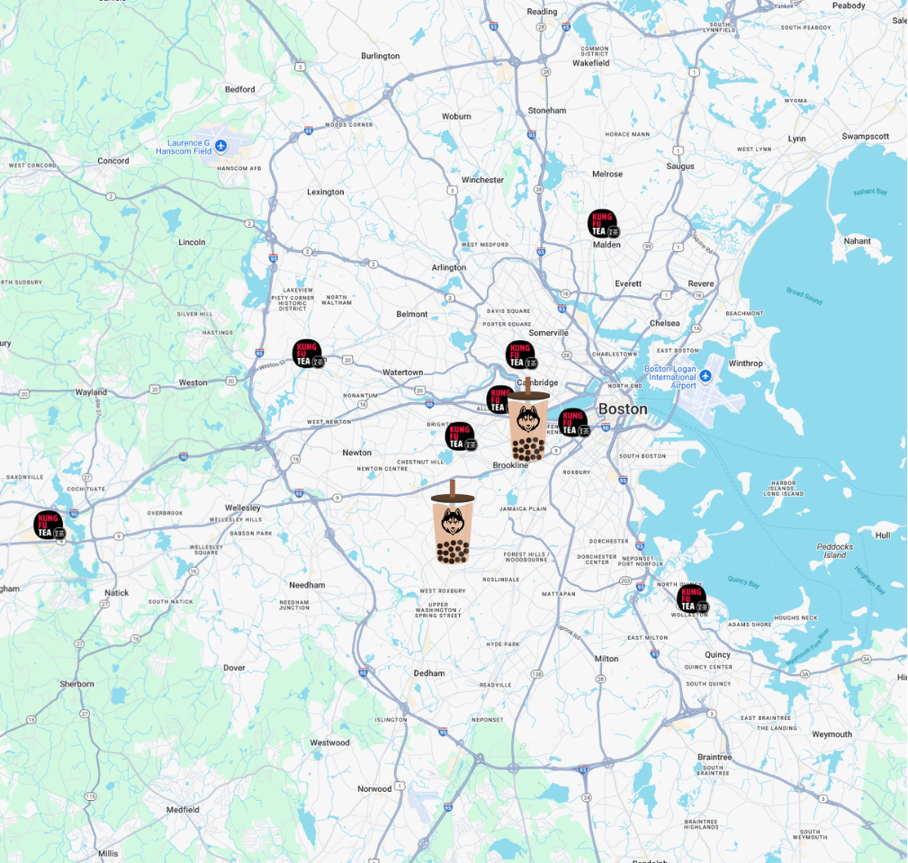
Greater Boston — Kung Fu Tea's footprint and the Husky Boba newcomer.
Our Market: Boston Boba
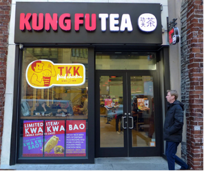
Kung Fu Tea
The established chain. Commits \(Q_K\) first — and knows exactly how Husky will respond.
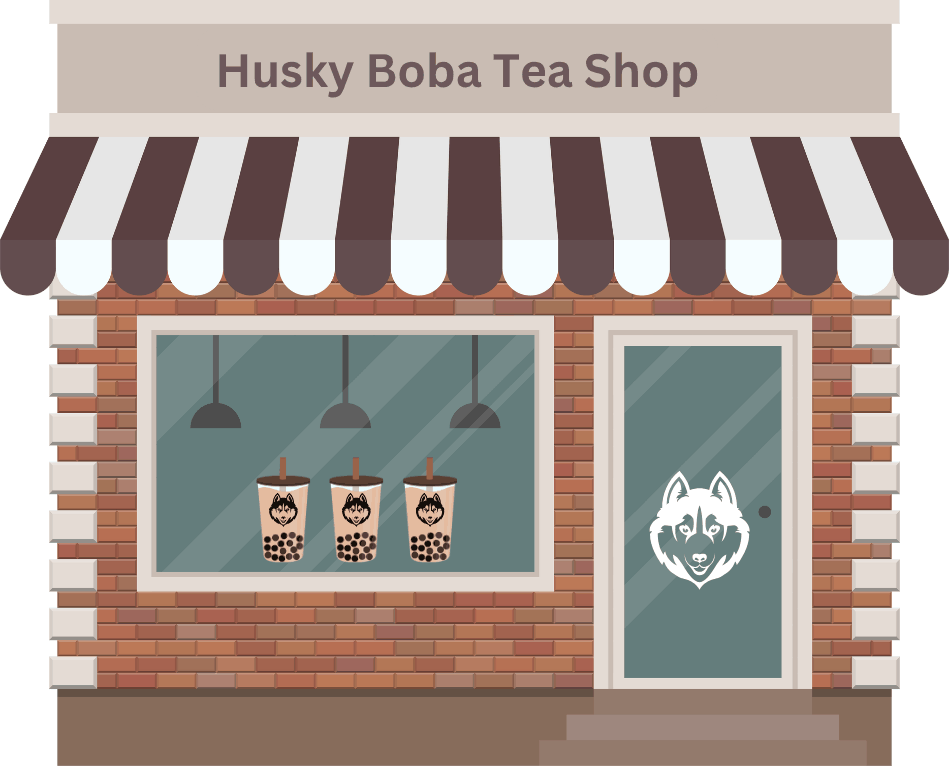
Husky Boba
The new entrant. Observes KFT's footprint, then takes the remaining share to maximize profit.
What is the Stackelberg outcome?
The Follower: Husky Boba's Best Response
Solve backwards — the follower moves second, so we work it out first. K = Kung Fu Tea (leader), H = Husky Boba (follower).
Husky observes the leader's \(Q_K\), faces \(P = 19.99 - 0.03(\color{#dc2626}{Q_K} + \color{#2563eb}{Q_H})\), with \(MC = \$1\), and sets \(MR_H = MC\):
\(19.99 - 0.03\,Q_K - 0.06\,Q_H = 1\)
\(18.99 - 0.03\,Q_K = 0.06\,Q_H\)
\(Q_H^{\,BR} = 316.5 - 0.5\,Q_K\)
If KFT makes nothing, Husky plays monopolist (316.5). For every cup KFT adds, Husky cuts half a cup — the downward-sloping reaction curve.
The Leader's Strategy
Now Kung Fu Tea commits \(Q_K\) first — and it already knows the follower's reaction \(Q_H^{BR} = 316.5 - 0.5\,Q_K\).
Because it moves first, the leader effectively faces the whole market… but it can't just play pure monopolist:
Husky will still produce, and that extra output pushes the market price down for both. So KFT must bake the follower's response into its own plan — that's what the next slide does.
The Leader's Calculation
Plug the follower's BR into the price. Total output \(Q = Q_K + Q_H^{BR} = Q_K + (316.5 - 0.5\,Q_K) = 0.5\,Q_K + 316.5\), so
\(P = 19.99 - 0.03(0.5\,Q_K + 316.5) = 10.495 - \mathbf{0.015}\,Q_K\)
The follower's retreat halves the leader's demand slope (\(0.03 \to 0.015\)) — a flatter, friendlier demand.
\(MR_K = 10.495 - 0.03\,Q_K\) (twice as steep). Set \(MR_K = MC = 1\):
\(10.495 - 0.03\,Q_K = 1 \;\Rightarrow\; 9.495 = 0.03\,Q_K\)
\(Q_K = \mathbf{316.5}\) cups/day — the monopoly quantity
The Stackelberg Equilibrium
Step 1 — Leader. Kung Fu Tea picks its optimal \(Q_K = \mathbf{316.5}\).
Step 2 — Follower. Husky observes it and uses its BR: \(Q_H^{BR} = 316.5 - 0.5(316.5) = \mathbf{158.25}\).
Step 3 — Price. \(Q = 316.5 + 158.25 = 474.75\); \(P = 19.99 - 0.03(474.75) = \mathbf{\$5.75}\).
The leader's big commitment forces the follower to exactly half its output. Total output is high, so price falls well below the monopoly \(\$10.50\).
First-Mover Advantage
Leader — Kung Fu Tea: \(\pi_K = (P - MC)\,Q_K = (5.75 - 1)(316.5) \approx \mathbf{\$1{,}503}\).
Follower — Husky Boba: \(\pi_H = (5.75 - 1)(158.25) \approx \mathbf{\$751}\).
The leader produces twice the quantity and earns twice the profit — the first-mover advantage.
vs Cournot (\(\$1{,}336\) each): the leader gains (+\$167), the follower loses (−\$585). The boba ladder now reads: monopoly \(\$3{,}005\) → Cournot \(\$1{,}336\) each → Stackelberg \$1,503 leader / \$751 follower.
Calculus Corner 13.2 — Stackelberg Backward Induction
Leader commits \(q_1\); follower observes and picks \(q_2\). Same \(P = a - bQ\), \(MC = c\). Solve backward.
Step 1 — follower (same as Cournot BR): \(q_2(q_1) = (a - c - bq_1)/(2b)\).
Step 2 — leader substitutes the reaction function: \(\pi_1(q_1) = \big(\tfrac{a-c}{2} - \tfrac{bq_1}{2}\big) q_1\). FOC \(\Rightarrow\)
\(q_1^{\ast} = \dfrac{a-c}{2b}, \quad q_2^{\ast} = \dfrac{a-c}{4b}, \quad \pi_1^{\ast} = 2\,\pi_2^{\ast}\)
Total \(Q^{S} = \tfrac{3(a-c)}{4b} > Q^{C}\), so \(P^{S} < P^{C}\). The leader's commitment makes the follower scale back — the first-mover advantage.
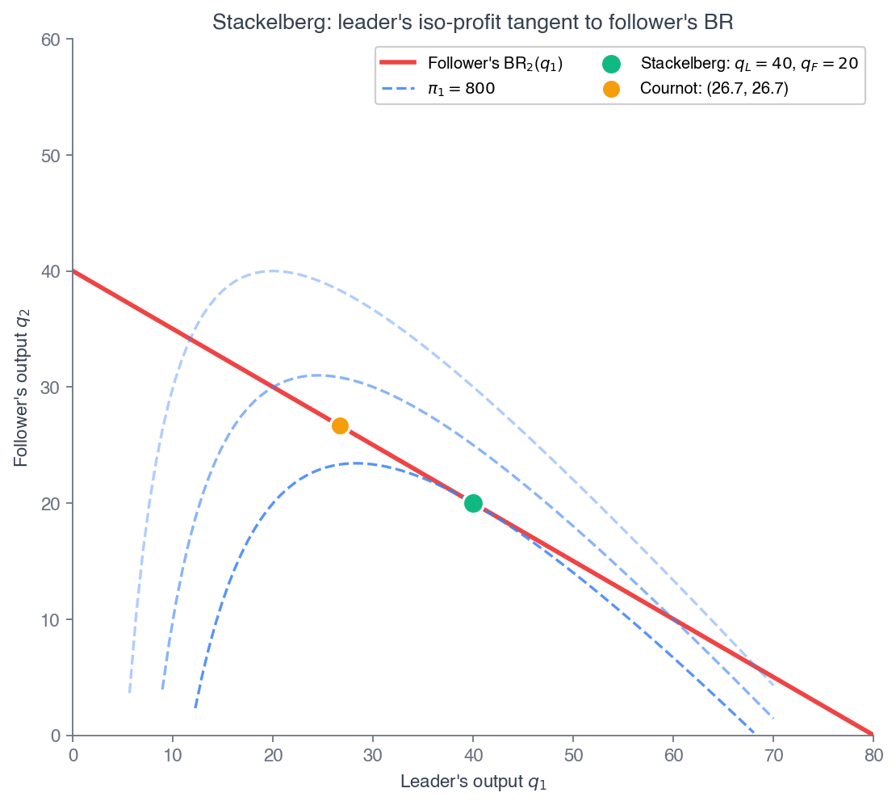
Leader rides the follower's reaction curve to its highest iso-profit contour.
Walkthrough 13.6 — Stackelberg: OpenAI Leads, Anthropic Follows
Problem. AI-assistant subscriptions: \(P = 56 - 0.4\,Q\) (\(P\) in \$/month, \(Q\) in millions of subscribers), \(MC = \$8\). OpenAI (first mover) commits \(q_O\) first; Anthropic observes and chooses \(q_A\). Solve and compare to Cournot.
Solve (backward induction)
Anthropic's reaction: \(q_A = 60 - 0.5\,q_O\).
OpenAI subs it into price: \(P = 32 - 0.2\,q_O\); \(MR_O = 32 - 0.4\,q_O = 8 \Rightarrow q_O^{\ast} = 60\)M.
\(q_A^{\ast} = 30\)M, \(Q = 90\)M, \(P = \$20\)/mo, \(\pi_O = \$720\)M, \(\pi_A = \$360\)M, \(L = 0.60\).
Check vs Cournot duopoly
Cournot: \(q = 40\)M each, \(Q = 80\)M, \(P = \$24\)/mo, each \(\pi = \$640\)M, \(L = 0.667\).
Stackelberg: more output (90 > 80), lower price (\$20 < \$24), lower Lerner.
Leader earns more (\$720M > \$640M); follower less (\$360M < \$640M). Industry \$1,080M < \$1,280M.
Takeaway. The first-mover advantage pays when the leader can credibly commit before the follower moves. OpenAI launched ChatGPT (Nov 2022) and scaled capacity well ahead of rivals; Anthropic's Claude entered after and best-responds to that footprint. Consumers gain (more output, lower price than Cournot) — but the leader pulls surplus from the follower (\(\pi_O = 2\,\pi_A\)).
Application: OPEC+ April 2026 — Saudi as Leader, US Shale as Fringe
9.0
Saudi mb/d (early 2025, EIA)
13.6
US mb/d 2025 (fringe price-taker)
On April 5, 2026, eight core OPEC+ nations agreed to begin unwinding their 1.65 mb/d voluntary cut, starting May 2026 with a 206 kb/d step (Saudi and Russia each +62 kb/d).
When Saudi-led cuts contract supply, prices rise, US shale rigs activate, and US output scales to partly offset. Saudi knows ex ante its cuts will be partially absorbed — that is the leader anticipating the follower.
OPEC+ is empirically more Stackelberg-with-fringe than pure Cournot, because cartel members publicly commit to quotas before observing the fringe response. The leader–follower asymmetry matches the first-mover-advantage prediction.
§13.7
Capacity & the Welfare Ranking
The Kreps-Scheinkman bridge — then line up all five regimes on one ruler
Walkthrough 13.7 — Capacity-Then-Price Replicates Cournot
Problem. Two-stage game on \(P = 100 - Q\), \(MC = 20\). Stage 1: choose capacity \(K_i\). Stage 2: set price \(P_i\) with \(q_i \leq K_i\). Find the subgame-perfect equilibrium.
Stage 2: with capacities \((K_1, K_2)\), price clears at \(P = 100 - (K_1 + K_2)\); each firm sells its capacity.
Stage 1: firm 1 maximizes \(\pi_1 = (80 - K_1 - K_2)K_1\); FOC \(K_1 = 40 - K_2/2\) — exactly the Cournot best response.
Symmetric: \(K^{\ast} = 80/3 \approx 26.67\), \(P^{\ast} = 140/3 \approx \$46.67\), \(\pi_i \approx \$711\) — the Cournot duopoly outcome, not Bertrand.
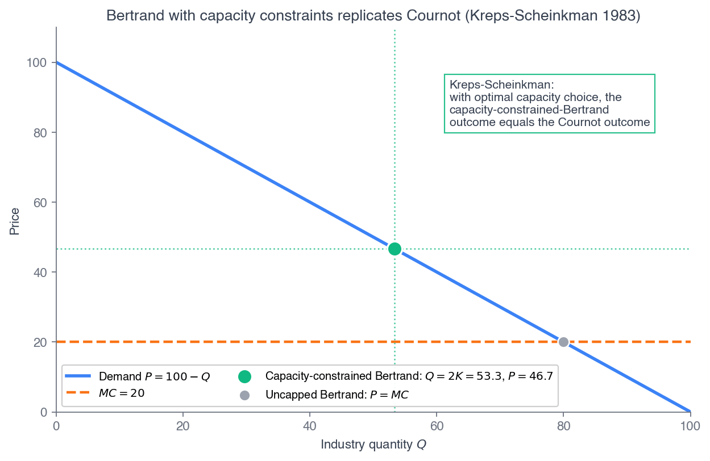
Finite capacity caps the undercutting punishment — price competition becomes quantity competition.
Poll #2 — Who Gives Consumers the Lower Price?
Same demand \(P = 100 - Q\), same \(MC = \$20\), same two firms. In one market they play Cournot (simultaneous quantities); in another, Stackelberg (one commits first). Which market gives consumers the lower price?
45 sec to vote
Answer: B — Stackelberg, \(\$40 < \$46.67\)
The leader commits to a large output (\(q_1 = 40\)); the follower retreats (\(q_2 = 20\)). Total \(Q = 60 > 53.33\), so \(P\) falls to \(\$40\).
Trap A: “simultaneous = more competitive” is wrong here. The first-mover advantage is an output-expansion commitment — great for the leader and for consumers, bad for the follower (\(\$400 < \$711\)). Sequential timing lowers price and raises consumer surplus.
Contestable Markets — When the Threat Is Enough
Baumol, 1982
Even a single firm prices competitively if entry is credible. With low sunk costs, a “hit-and-run” entrant disciplines the incumbent. A small-town gas station may price like a competitor.
When it breaks down
Contestability assumes low sunk costs. A frontier AI run (~$1B), hyperscale data centers, gigawatts of power — none recoverable if you fail. The desert highway’s lone station can charge monopoly prices.
The real question isn’t how concentrated a market is — it’s whether a credible challenger could actually enter. When the moat costs billions to cross, pure contestability is an illusion.
Monopoly or Contestable Market? — Microsoft, 1998

In 1998 the DOJ called Microsoft an illegal monopoly — bundling Internet Explorer with Windows to crush Netscape. Microsoft’s defense: the market is contestable — new technology could displace us at any time. Who was right?
Contestable in Action — the Browser Wars
“Of far greater concern to Microsoft is the competition from new and emerging technologies, some of which are currently visible and others of which certainly are not… This array of known, emerging, and wholly unknown competitors places enormous pressure on Microsoft to price competitively and innovate aggressively.”
He was right: IE’s near-monopoly was displaced by Chrome. The threat of entry — even from a company not yet visible — was real.

Contestable Today? — Cloud Computing
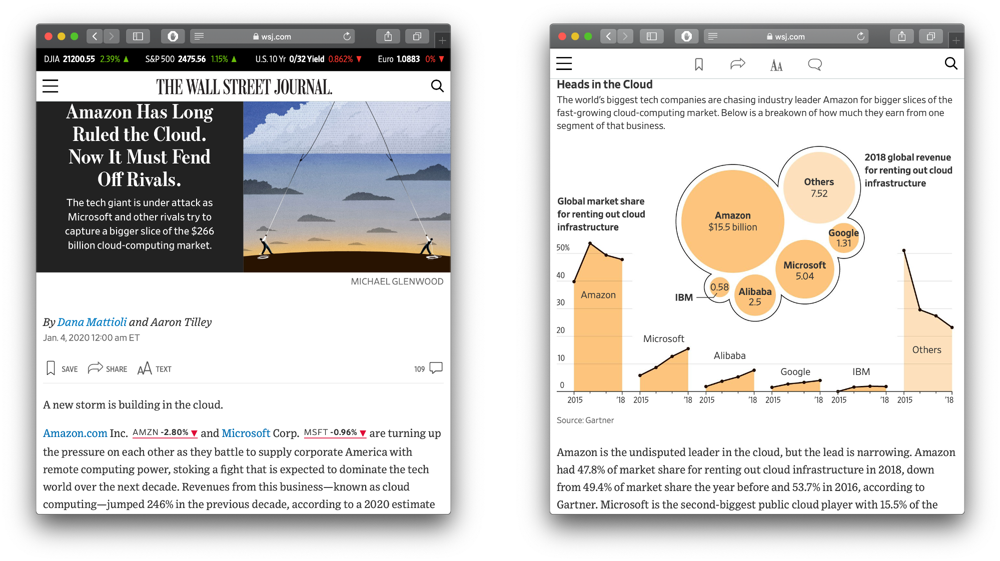
Just like frontier AI today, the cloud once had massive sunk costs (data centers, fiber). But as the industry matured, Microsoft and Google entered — Amazon’s lead narrowed (53.7% → 47.8%). High sunk costs can fall over time, turning a near-monopoly into a contestable market.
Walkthrough 13.8 — Welfare Across Five Regimes
All on the locked calibration \(P = 100 - Q\), \(MC = \$20\), \(TS^{PC} = \$3{,}200\). The chapter's payoff table.
| Regime | \(Q^{\ast}\) | \(P^{\ast}\) | Industry \(\pi\) | \(CS\) | \(TS\) | \(DWL\) | \(L\) |
|---|---|---|---|---|---|---|---|
| (a) Cartel / monopoly | 40 | \$60 | \$1,600 | \$800 | \$2,400 | \$800 | 0.667 |
| (b) Cournot duopoly | 53.3 | \$46.67 | \$1,422 | \$1,422 | \$2,844 | \$356 | 0.571 |
| (c) Stackelberg | 60 | \$40 | \$1,200 | \$1,800 | \$3,000 | \$200 | 0.500 |
| (d) Diff. Bertrand (stylized) | ~70 | ~\$30 | ~\$700 | ~\$2,450 | ~\$3,150 | ~\$50 | ~0.333 |
| (e) Bertrand homog. = PC | 80 | \$20 | \$0 | \$3,200 | \$3,200 | \$0 | 0 |
Both rankings are monotonic. Welfare: \(TS^{PC} > TS^{Bdiff} > TS^{S} > TS^{C} > TS^{M}\). Lerner: \(0 < L^{Bdiff} < L^{S} < L^{C} < L^{M}\). Moving from PC toward monopoly raises Lerner and lowers welfare in lockstep. Note \(L^{S} < L^{C}\) — Stackelberg's output expansion beats Cournot for consumers.
The Market-Structure Spectrum, End to End
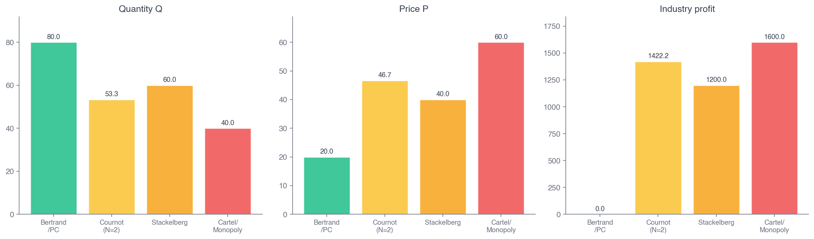
One picture for the whole chapter: every model is a point between the perfect-competition floor (\(L = 0\), max welfare) and the cartel ceiling (\(L = 0.667\), min welfare). Which point a real market lands on is selected by its strategic structure — quantities vs prices, simultaneous vs sequential, homogeneous vs differentiated.
Measuring Concentration: The HHI — and Its Limits
The Herfindahl-Hirschman Index sums squared market shares: \(\text{HHI} = \sum_i s_i^2\) (shares in %, range 0–10,000). \(N\) equal firms give \(\text{HHI} = 10{,}000/N\); a monopoly is \(10{,}000\).
It's the antitrust agencies' first-pass screen for merger review — higher HHI flags more concentration.
But concentration is not conduct. §13.5 showed two differentiated firms can hold \(L = 0.300\) while five homogeneous Cournot firms hold less — and Bertrand reaches \(L = 0\) with just two. HHI is a proxy, not a verdict. The strategic structure (this chapter) is what actually sets the markup.
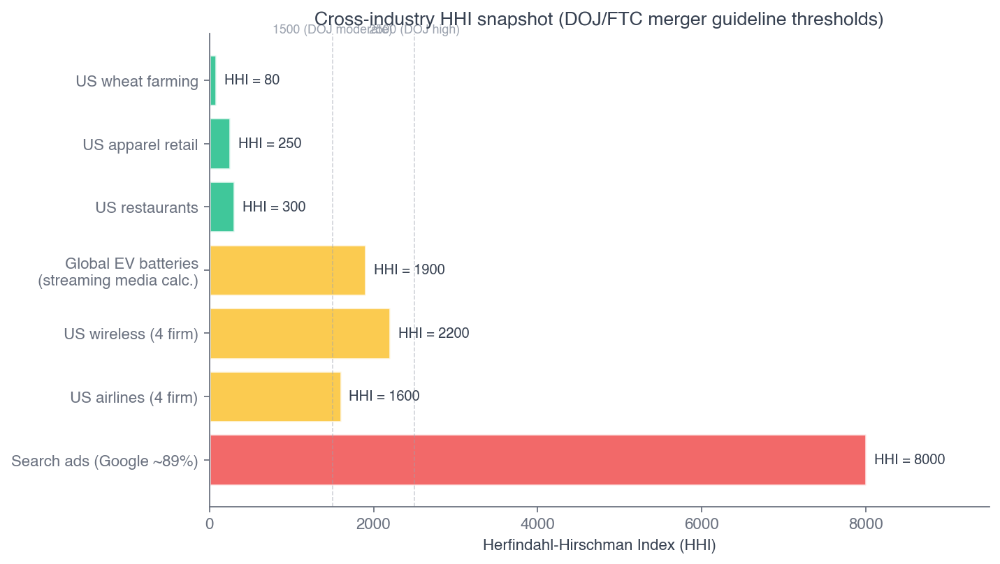
HHI across industries — a screening tool, not a measure of market power itself.
Interactive — The HHI Concentration Ruler
HHI = sum of squared market shares. Pick an industry to drop it on the 0–10,000 ruler, then simulate a merger of the two biggest firms — the jump is the cross-term 2×s₁×s₂.
Chapter 13 — The Six Results
Chamberlin LR tangency (§13.2). Free entry of differentiated firms → perceived demand tangent to ATC: \(P > MC\) and excess capacity, together.
Cournot \(N\)-firm (§13.3). \(q^{\ast} = \tfrac{a-c}{(N+1)b}\), \(P^{\ast} = \tfrac{a+Nc}{N+1}\), \(L^{\ast} = \tfrac{4}{5+N}\); \(L \to 0\) as \(N \to \infty\).
Bertrand paradox (§13.4). Homogeneous + unlimited capacity + one shot → \(P = MC\) with just two firms.
Differentiated Bertrand (§13.5). \(P^{\ast} = \tfrac{\alpha + \beta c}{2\beta - \gamma}\); finite markup for any \(\gamma < \beta\). Explains the streaming cluster.
Stackelberg (§13.6). Leader \(\tfrac{a-c}{2b}\), follower \(\tfrac{a-c}{4b}\); \(\pi_1 = 2\pi_2\). Output up, price down vs Cournot.
Kreps-Scheinkman (§13.7). Capacity-then-price replicates Cournot — the paradox is a teaching case; real capacity-bound markets play Cournot.
One spine. Welfare ranks \(TS^{PC} > TS^{Bdiff} > TS^{S} > TS^{C} > TS^{M}\); Lerner ranks the reverse. Every model is a point between the competitive floor and the cartel ceiling, selected by strategic structure.
Chapter 13 — complete
Questions?
Next: Chapter 14 — Game Theory. We made the conjectures informal this chapter; now we formalize them — with the four-firm streaming constellation as the repeated-game laboratory.